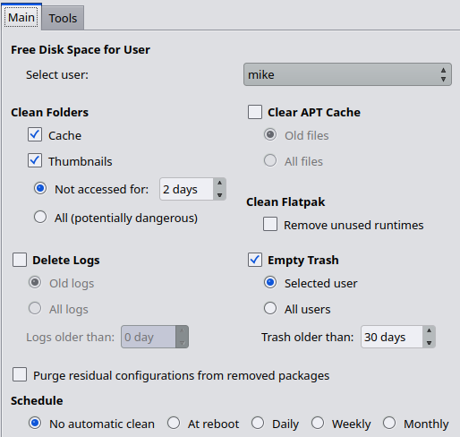
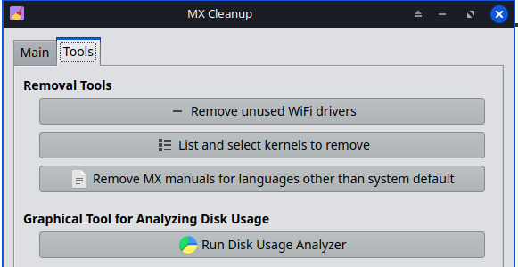
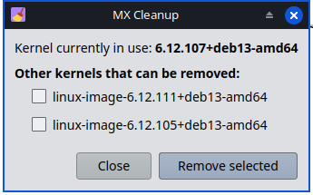
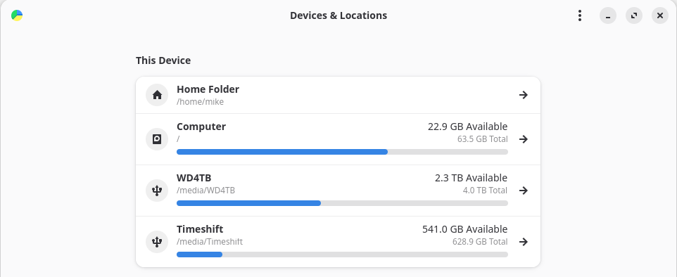
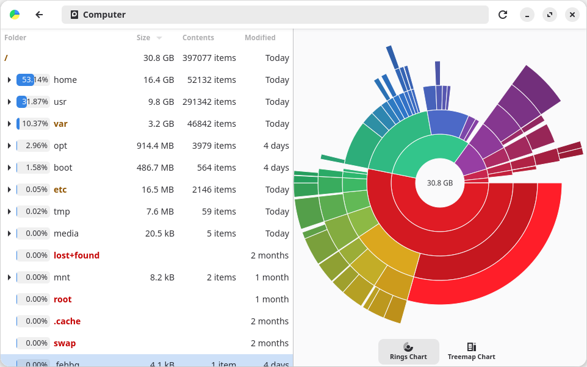
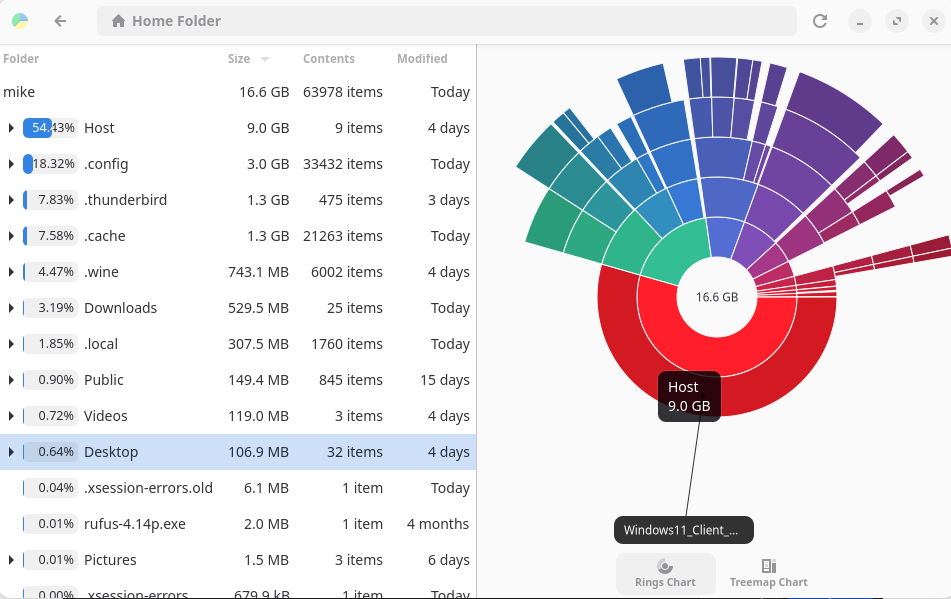

This application offers several easy cleaning actions to help increase/maintain free disk space.

Here you will find specific cleaning tools that all are run on a scheduled time.
The default schedule is No automatic clean. Other choices are: At reboot, Daily, Weekly and Monthly.
Click Apply and then x Close.
Here you will find specialized cleaning tools that are one time actions.

Remove unused WiFi drivers – Linux kernel 6.14 and later has many RealTek drivers in kernel. This removes the DKM type WiFi drivers that were used by older kernels. This prevents them from being rebuilt needlessly each time a Linux kernel update is applied.
List and select kernels to remove. If you have you kernels auto updating the space consumed then increases over time. This is especially true if kernels are in /boot when root encryption configured.

The Kernel currently in use: kernel can NOT be removed. It is considered a good practice to keep at least 1 kernel beyond the one in use.
Remove MX manuals for languages other than the system default. This frees up disk space taken by manuals and FAQ files (PDF) that are not needed.
Clicking Run Disk Usage Analyzer starts an applet that gives a graphical disk usage map display of your used. When first opened it asks you to define a starting point.

Then it shows a Folder list (left). The listing is sorted by the Size of disk space used. Space use is shown as a percentage in the Folder listing and is highlighted as red in the Rings Chart (right).

This allows for a selection of a specific part of the file system to be scanned. A single folder or the entire file system. Clicking a folder updates the display and refreshes the listing of internal details.

Mousing over a given item in the chart (above) shows folder (Host) in light red and component file of it (Windows11_Client_…) in a darker red.
Each directory can be operated on by right clicking and choosing either ‘Open Externally’ (File Manager) or ‘Move to Trash’ options.
Note that there are other cleanup applications available in the repos such as Bleachbit, but these have a significant potential to destroy a Linux OS and should only be used by advanced users.